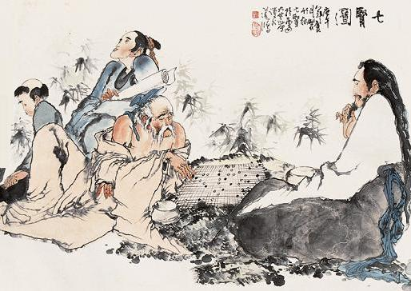
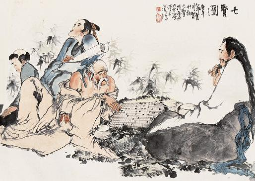

back
back
Go
Il Go, conosciuto anche come Baduk o Weiqi, è un antichissimo gioco da tavolo di strategia e abilità mentale, originario della Cina, che si è diffuso in tutto il mondo, diventando uno dei giochi più apprezzati e studiati.
La sua semplicità apparente nasconde una profondità tattica e strategica che lo rende affascinante e intrigante per giocatori di ogni livello.
 
Il Go è stato oggetto di studio e analisi da parte di giocatori, filosofi e matematici per secoli.

Il Go è stato oggetto di studio e analisi da parte di giocatori, filosofi e matematici per secoli.
Esistono libri, documentari e risorse online dedicati al miglioramento delle abilità nel gioco.
Il Go ha una storia millenaria, risalente a oltre 2500 anni fa.
La sua origine è attribuita alla Cina antica, anche se alcuni ritengono che possa essere stata sviluppata anche in altre regioni dell'Asia orientale.
Il gioco si diffuse rapidamente in Corea, Giappone e altre parti dell'Asia, diventando parte integrante della cultura di queste nazioni.
Il Go ha avuto un impatto significativo sulla cultura di molte nazioni asiatiche.
È stato spesso utilizzato come metafora per la vita stessa, con i suoi alti e bassi, le sue vittorie e sconfitte.
Il gioco è anche associato a valori come pazienza, concentrazione e rispetto per l'avversario.
Regole del Gioco
Si gioca su una griglia quadrata, tipicamente 19x19, utilizzando pedine chiamate "pietre", di solito di colore nero e bianco.
L'obiettivo è conquistare territorio e catturare le pietre avversarie posizionandole strategicamente sulla griglia.
Le pietre vengono posizionate su intersezioni della griglia, chiamate "punti", e il giocatore che controlla più territorio alla fine della partita vince.
Non esistono mosse casuali; ogni pietra posizionata ha un impatto su tutta la partita.
Il giocatore deve bilanciare l'espansione del proprio territorio, la protezione delle proprie pietre e l'attacco alle pietre avversarie.
Questo richiede una comprensione profonda dei concetti di territorio, influenza e sacrificio.
Tecnologia e Intelligenza Artificiale
Nel 2016, AlphaGo, un programma di intelligenza artificiale sviluppato da DeepMind, una società di Google, ha sconfitto il campione del mondo Lee Sedol in una serie di partite storiche, dimostrando il potenziale dell'IA nel dominio del gioco.
In conclusione, il Go è molto più di un semplice gioco da tavolo.
È un'arte, una scienza e una filosofia, che continua ad affascinare e ispirare giocatori di tutto il mondo.
La sua profondità e complessità lo rendono un passatempo senza tempo, capace di offrire sempre nuove sfide e soddisfazioni a chiunque si avvicini ad esso.
per chi unque volgia provare a giocare clicca qui.